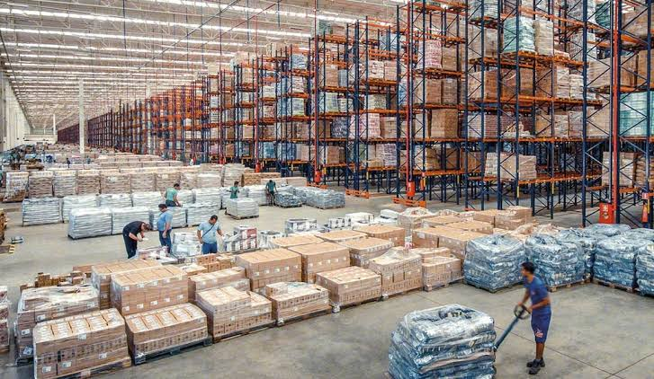

Effective management of inbound logistics is essential for optimizing the supply chain. Timely and accurate receipt of materials, efficient storage, and strategic transportation play pivotal roles in ensuring a smooth and cost-effective flow of goods into the organization, ultimately contributing to overall operational success.
In summary, the efficiency of process logistics is central to the seamless transformation of raw materials into finished products. Streamlining operations, minimizing bottlenecks, and implementing robust quality control measures are key aspects. A well-optimized process logistics ensures cost-effectiveness, timely production, and overall operational excellence within the supply chain.
Outbound logistics is a critical component in the supply chain, encompassing the efficient storage, handling, and distribution of finished goods to end customers. Timely and accurate order fulfillment, coupled with effective transportation management, is vital for meeting customer demands and maintaining a competitive edge. A well-executed outbound logistics strategy contributes significantly to customer satisfaction and overall business success.
